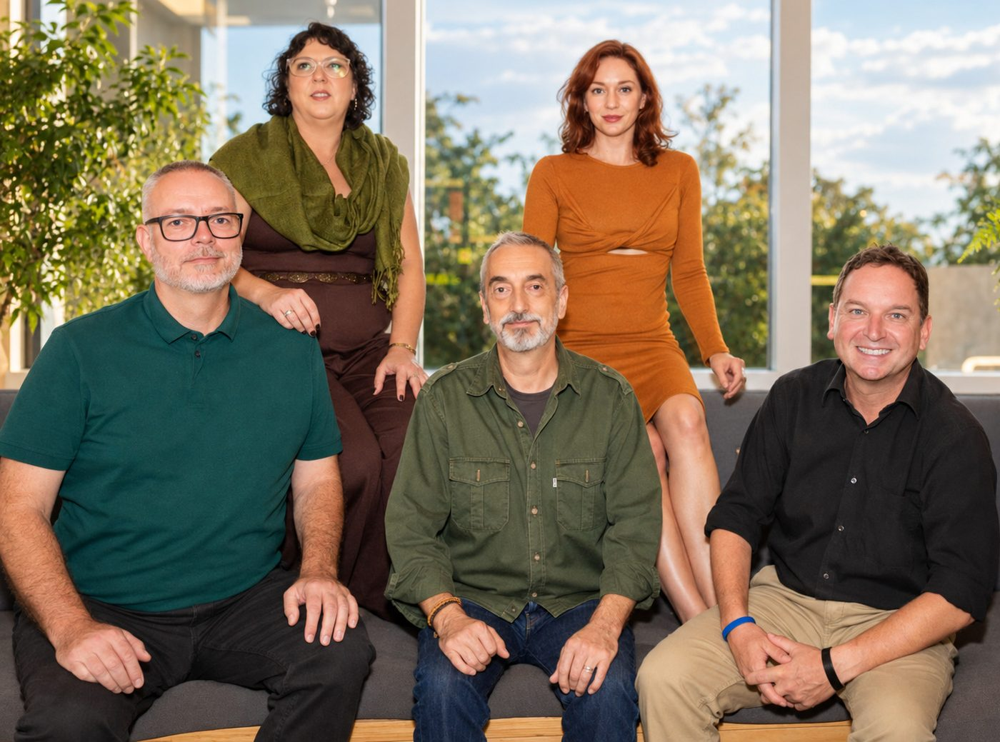
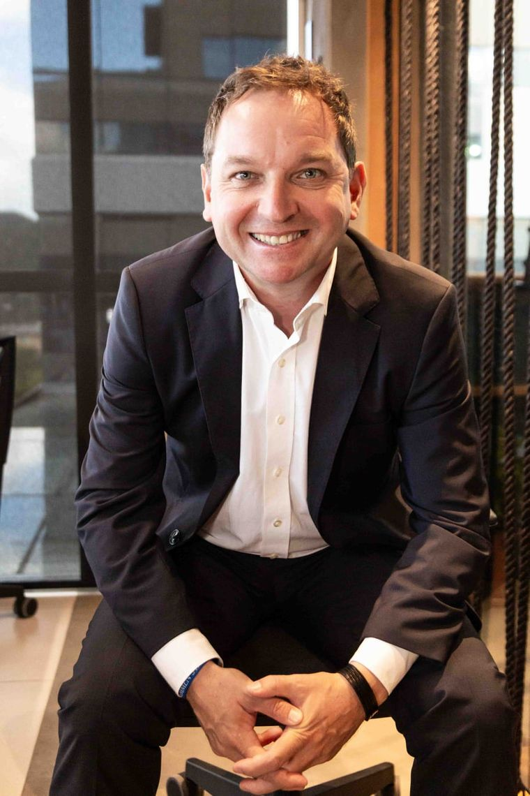
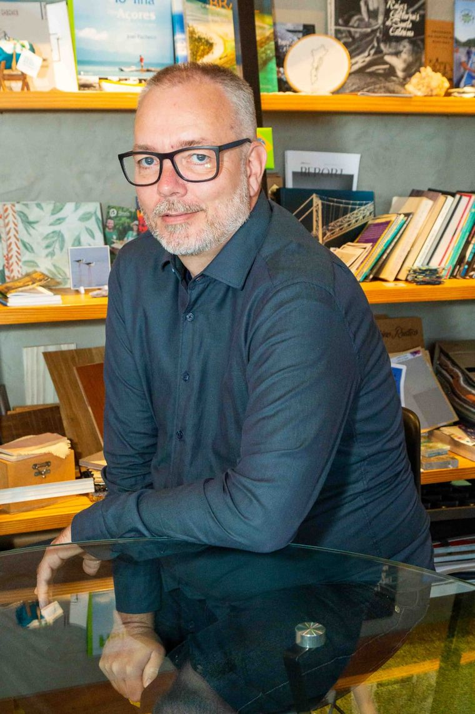
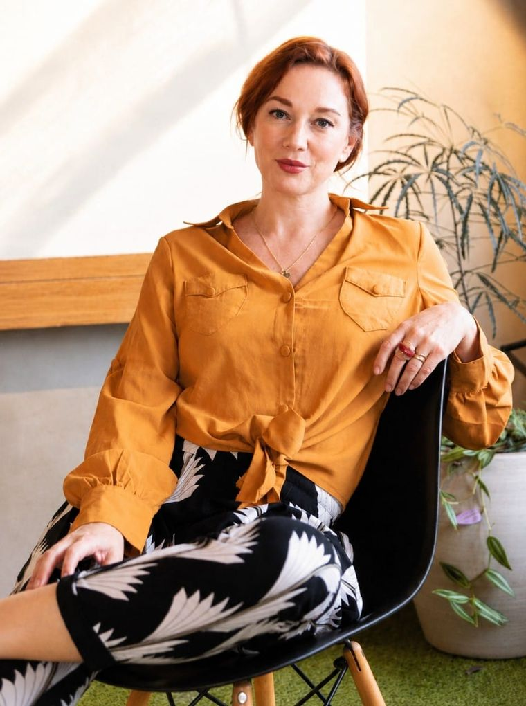
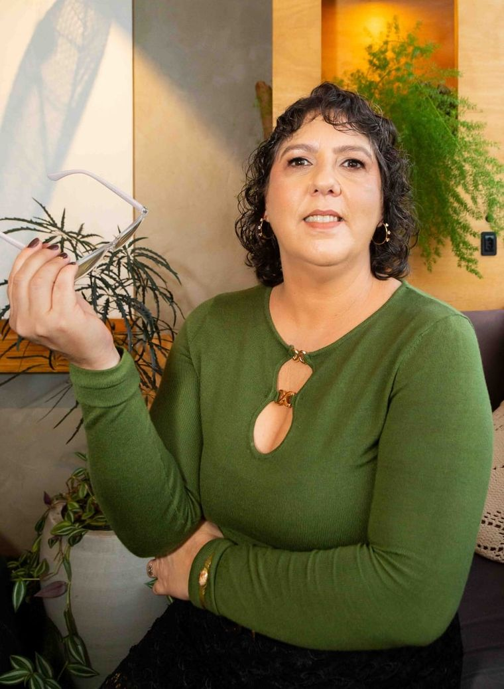
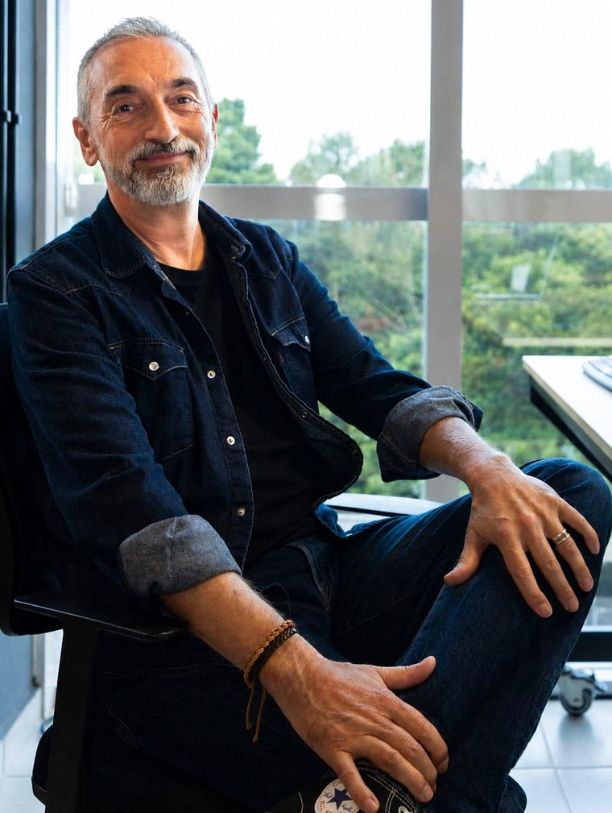

Five people, four working languages and a mix of experience that spans business development, digital strategy, marketing, communication, localisation and creative production.

We are all based in Florianópolis, southern Brazil, with roots in Germany, Romania, the UK and Brazil.

Market Entry & Business Development
Based in Florianópolis, Brazil
Hugo was born in Romania and grew up in Germany, where he studied International Business. His dissertation focused on Mercosur, an early indication of where his professional path would lead him.
He has lived and worked across Europe as well as in Mexico, Chile and Brazil. His career has focused on international business, management and market development. He has established and led businesses in Latin America, including building a European subsidiary in Chile, and has helped companies develop their presence in markets including Colombia, Mexico and Chile.
This experience gives him a practical understanding of what it takes to enter a new market, from assessing opportunities and finding the right partners to building relationships and getting things moving locally.
At Gateway Mercosur, Hugo focuses on market entry and business development, helping European companies understand the opportunities, navigate the challenges and build strong foundations for doing business in Latin America.
Digital Strategy & Online Communication
Based in Florianópolis, Brazil
Born in Frankfurt, Germany, and living in Florianópolis since 2009, André is an online marketing strategist and the founder of Amicia Online Marketing.
His work covers digital strategy, SEO, Google Ads, performance marketing, content and web development. Over the years he has worked with companies in Europe and South America across a range of industries, helping them build and improve their digital presence.
At Gateway Mercosur, André brings this digital perspective into the wider market-entry picture, helping companies position themselves online, reach the right audiences and make their digital communication work across markets.


Cross-Cultural Communication & PR
Based in Florianópolis, Brazil
Originally from Cologne, Germany, Anne has worked in communications, PR, brand communication, storytelling, copywriting, corporate events and social media.
Her international experience began in Europe and took her to Santiago de Chile and London before she settled in Florianópolis in 2015. Working across languages and cultures has been a constant throughout her career.
At Gateway Mercosur, Anne focuses on communication, marketing and localisation, helping companies adapt their message to new markets without losing what makes their brand their own.
She is particularly interested in the things that often get lost between languages: tone, context, cultural references and the way a message is actually received.
Digital Communication & Performance Marketing
Based in Florianópolis, Brazil
Born in Rio de Janeiro and raised between Rio and Florianópolis, Flavia also spent part of her life in Frankfurt, Germany. She studied German Studies at the Federal University of Santa Catarina and later completed a Master's degree in Instructional Design.
Her work focuses on digital communication, Google Ads, SEO, copywriting and multilingual content strategy. She has worked with clients across Europe and Latin America and has been involved in digital strategy at Amicia Online Marketing since its foundation.
At Gateway Mercosur, Flavia brings together her linguistic background and digital expertise, helping companies communicate clearly and effectively with audiences in different markets.


Multimedia & Creative Direction
Florianópolis, Brazil · London
Originally from the UK, Adrian has worked in sound engineering, music production, composition, video and creative production for more than three decades.
His career has taken him through the music and film industries, working with musicians, artists, productions and creative projects internationally. He also brings experience in video editing, website design and digital production.
At Gateway Mercosur, Adrian looks after the creative and technical side of our multimedia work, from video and audio to web and visual content.
He divides his time between Florianópolis and London, giving him a natural connection to both European and Brazilian creative environments.
Tell us what you're looking to achieve. We'd love to hear from you.